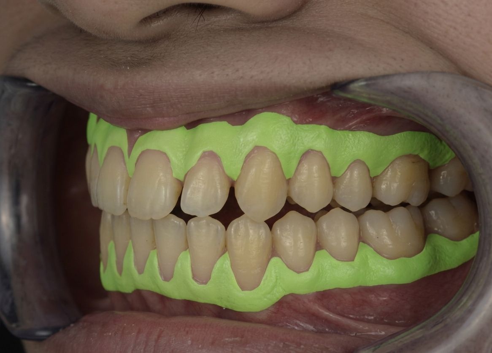

The firm gum tissue around the teeth with a protective outer layer that makes it more resistant to stress and inflammation than softer gum tissue
Serve as a key indicator of periodontal health and stability
AI-powered digital solution designed to transform how Keratinized Gingiva Width (KGW) is assessed in modern dentistry, enabling users to upload standard intraoral photographs and receive fast, objective, and clinically meaningful measurements.